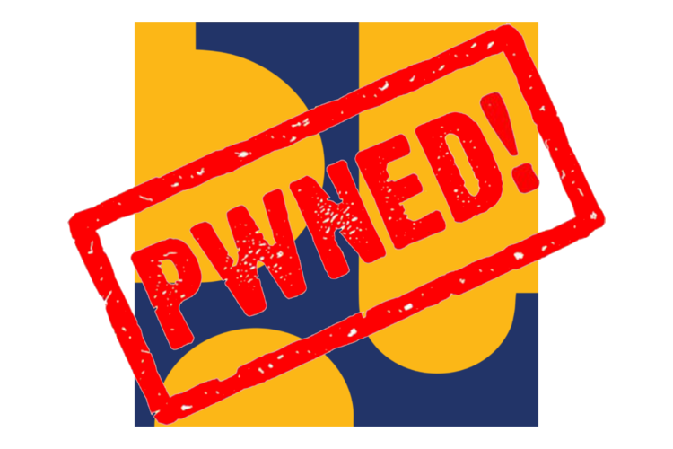
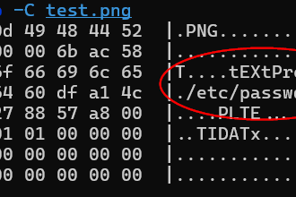

Hi there! I'm Asyary, an Undergraduate Informatics Engineering at UNESA. I work as a Penetration Tester (Ethical Hacker) since 2023, and I've been doing Backend Development using PHP frameworks such as Laravel and CI, and JavaScript Runtime Environments such as NodeJS since 2021.
My professional track record ranges from conducting high-stakes security assessments on a government infrastructure at Kementerian PU, securing infrastructure for a US-based science and literature organization (under NDA), and as a Web Security Bootcamp Mentor at KSM Cyber Security.
I love sharing what I learn. You can check out my technical writeups on my Medium: https://asyary.medium.com/

I interned at the Ministry of Public Works (Kementerian PU) for about four months as a penetration tester. This is the story of how I hacked the root domain server of Indonesia’s Ministry of Public Works, pu.go.id.

I worked with a US-based science and literature organizations to secure their digital infrastructure under non-disclosure agreements. This is the story of how I earned my first paid bug bounty.
You can reach out and/or connect with me through any of the following channels: